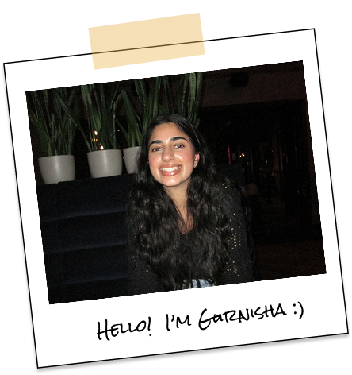

For me, every challenge is best solved through empathy and communication.
With a passion for UX research and a keen eye for content design, I find fulfillment in projects that bring clarity to complex experiences. Guided by curiosity and drive to uncover root issues, I am always seeking opportunities to evaluate experiences to ensure they serve users first.
I thrive in collaborative environments that bring together diverse perspectives for stronger solutions and better user outcomes. By aligning user needs with business objectives and established guidelines, I help create viable solutions.
Whether uncovering insights or refining content, I'm motivated by crafting experiences that are grounded in user needs.
Education
Simon Fraser University
Bachelor of Science in
Interactive Arts and Technology
Experience
JAN- DEC
2025
Samsung R&D Canada
UX Writer | Internship
Vancouver, Canada